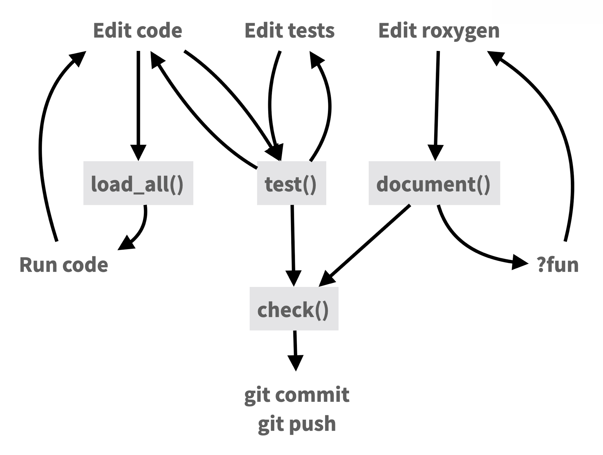

9 Package Development
Most R users start writing functions to avoid repeating themselves. The same data cleaning steps appear in three scripts, so they get pulled into a shared helper. That helper gets sourced into a fourth script. A colleague asks for it and it gets emailed. Then it breaks on their machine because they’re missing some dependency. At some point the question becomes: why not just make this a package?
My general rule is: If you do something more than once, write a function. If you write more than one function, make it a package.
An R package is the right unit of sharing for reusable code. It gives your functions a home with documentation, a test suite, versioning, and a clear installation path.
This chapter is a brief introduction to R package development. It is not a comprehensive guide, but it will give you the basics and point you to resources for learning more.
9.1 Why build a package?
The most visible benefit is sharing, but that undersells it. Packaging imposes structure that improves code before anyone else touches it.
Documentation is required, not optional. Every exported function must have a help page describing what each argument does, what the function returns, and what edge cases exist. A comment in a script is optional; R CMD CHECK will warn if documentation is missing. Writing it forces careful thinking about the function’s interface, and once written, it is available to anyone who types ?your_function.
Dependencies must be declared. A script accumulates library() calls by habit. A package requires you to enumerate exactly what it depends on in a DESCRIPTION file. When someone installs your package, those dependencies install automatically. There is no guessing about which packages need to be present. This is the same problem renv addresses for project-level reproducibility (see Section 10.1), but solved at the code level rather than the project level.
Sharing becomes a single command. A package on GitHub can be installed by anyone with remotes::install_github("yourname/yourpkg"). No files to transfer, no paths to configure, no sourcing step to explain. The package can also be pinned in a project’s renv lockfile like any CRAN package.
Testing has a natural home. Package development pairs with unit testing through the testthat framework. A suite of passing tests is a concrete claim that the functions behave as documented. Finding that a change broke something during development is far cheaper than finding it later.
A public health team that builds a shared package of common utilities (data validation functions, standard plot themes, reporting helpers) gets documented interfaces, declared dependencies, and a single install command that works for anyone on the team.
9.2 The package development workflow
The core loop of package development (edit code, load and run it, run tests, update documentation, check) is well captured by the Posit package development cheat sheet at https://rstudio.github.io/cheatsheets/html/package-development.html.

R package development is an entire topic in itself, and this section is just a brief introduction. Below I’ll point you to some helpful resources.
9.3 Resources
The definitive reference is R Packages (2nd ed.) by Hadley Wickham and Jennifer Bryan (Wickham and Bryan 2023), available free online. It covers package structure, function documentation, testing, data, and the publication process.
The Posit Package Development cheat sheet is a quick reference for the devtools and usethis commands used throughout development.

In January 2026, I gave a two-hour workshop on R package development in Positron covering this workflow end to end: package structure, writing and documenting functions, exported package data, programming with dplyr, unit tests with testthat, code coverage with covr, continuous integration with GitHub Actions, and a pkgdown documentation site. I also demonstrated using Positron Assistant with Claude in a few places..
All materials are available:
- Package documentation site: https://stephenturner.github.io/rpkgdemo/
- Full tutorial: https://stephenturner.github.io/rpkgdemo/articles/rpkgdemo
- Source code: https://github.com/stephenturner/rpkgdemo
- Recording: https://www.youtube.com/watch?v=hc_RwZx3wNE
Finally, the Writing R Extensions manual is the official reference for package structure and metadata. It is a bit dry, but it is the source of truth for how packages work under the hood. I’d recommend starting with the R Packages book and asking your favorite AI for help when you run into trouble, but the R Extensions manual is the detailed authoritative guide and is there when you need it.